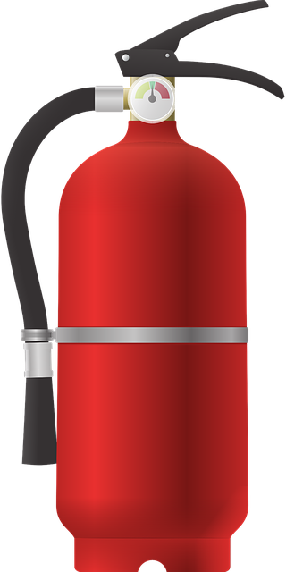

6.3.- Lanzando exepciones desde los constructores

De la misma manera que hemos lanzado excepciones desde métodos cuando se producían situaciones no deseadas o erróneas interrumpiendo la ejecución del método, también puede hacerse desde un constructor. Esto haría que detuviera bruscamente la ejecución del constructor y evitaría que se finalizara el proceso de construcción. De esta forma se impediría que llegara a instanciarse el objeto devolviéndose el control de la ejecución a lugar desde donde se invocó al constructor.
¿En qué casos puede ser conviente impedir que se intancie un objeto? Imagina, por ejemplo que los parámetros que se han pasado al constructor no son apropiados por no cumplir alguna condición. En tal caso no debería poder crearse un objeto con atributos inválidos. Es una manera de garantizar que si el objeto ha sido creado es porque ha sido posible hacerlo con todas las garantías.
Si volvermos a nuestro ejemplo anterior de la clase Persona, podríamos por ejemplo evitar que se lleve a cabo la instanciación si los valores que se pasan como parámetros no son adecuados:
- ninguno de los parámetros
nombre,apellido1,apellido2,dnideberíanullo vacío (cadena vacía), - el parámetro
dni, además, debería contener un DNI válido (ocho números más una letra que corresponda a esos números).
Por tanto, el constructor no va a consistir simplemente en la asignación de valores a atributos, sino que en muchas ocasiones también contendrá comprobaciones de validez y coherencia como ya hemos hecho en muchos otros métodos.
Teniendo en cuenta todo eso, un constructor con cuatro parámetros para nuestra clase Persona podría quedar de la sigiente manera:
public Persona (String nombre, String apellido1, String apellido2, String dni) throws IllegalArgumentException {
// Comprobación de que los valores de entrada son válidos
if (nombre==null || apellido1==null || apellido2==null || dni==null) { // Comprobación de valores no nulos
throw new IllegalArgumentException ("alguno de los parámetros de entrada es null");
} else if (nombre.isEmpty() || apellido1.isEmpty() || apellido2.isEmpty() || dni.isEmpty()) { // Comprobación valores no vacíos
throw new IllegalArgumentException ("alguno de los parámetros de entrada es una cadena vacía");
} else if (!isDniValido(dni)) { // Comprobación de que el DNI es válido
throw new IllegalArgumentException ("el DNI no es válido");
}
// Una vez que se ha garantizado que todos los valores de entrada son apropiados, puede continuar el proceso de instanciación
// del objeto
// Asignación de valores iniciales a los atributos a partir de los parámetros de entrada recibidos
this.nombre= nombre;
this.apellido1= apellido1;
this.apellido2= apellido2;
this.dni= dni;
}
Si quisiéramos ser más específicos a la hora de indicar el error que se ha producido, siempre podemos tratar cada comprobación por separado y generar un texto de error que proporcione información más concreta. El precio que tendremos que pagar será escribir más líneas de código para comprobar cada posible error por separado. Por ejemplo:
public Persona (String nombre, String apellido1, String apellido2, String dni) throws IllegalArgumentException {
// Comprobación de que los valores de entrada son válidos
if (nombre==null || nombre.isEmpty())
throw new IllegalArgumentException ("el parámetro nombre es null o contiene la cadena vacía");
if (apellido1==null ||apellido1.isEmpty())
throw new IllegalArgumentException ("el parámetro apellido1 es null o contiene la cadena vacía");
if (apellido2==null ||apellido2.isEmpty())
throw new IllegalArgumentException ("el parámetro apellido2 es null o contiene la cadena vacía");
if (dni==null ||dni.isEmpty())
throw new IllegalArgumentException ("el parámetro dni es null o contiene la cadena vacía");
if (!isDniValido(dni))
throw new IllegalArgumentException ("el DNI no es válido");
...
Por otro lado, también podría decidirse lo contrario: devolver siempre el mismo mensaje de error en caso de que algún parámetro no sea apropiado (un texto de error del estilo "parámetros no válidos"). Por ejemplo:
public Persona (String nombre, String apellido1, String apellido2, String dni) throws IllegalArgumentException {
// Comprobación de que los valores de entrada son válidos
if (nombre==null || nombre.isEmpty()) apellido1==null || apellido1.isEmpty() apellido2==null ||apellido2.isEmpty() ||
dni==null ||dni.isEmpty() || !isDniValido(dni)) {
throw new IllegalArgumentException ("parámetros no válidos");
...
Todo dependerá de lo "finos" que queramos ser a la hora de indicar por qué se ha producido un error. Cuanto más específicos seamos más información se proporcionará a quien use el constructor y mayor será la complejidad de las líneas de código del cuerpo del constructor. Cuanto menos específicos seamos, menos información proporcionaremos sobre el error y el código del constructor quedará más simple Deberemos decidir en cada caso qué es lo más ventajoso para el uso de la clase por parte de otro programador.
En cualquier caso, a partir de ahora, cada vez que intentemos instanciar un objeto de la clase Persona deberíamos hacerlo dentro de un bloque try - catch para poder capturar los posibles errores que se pudieran producir durante el proceso de construcción o instanciación:
Persona p1;
try {
p1= new Persona ("Juan", "Gil", "Torres", "12345678L");
System.out.printf ("Objeto Persona creado y referenciado desde la variable p1.\n");
System.out.printf ("Contenido referenciado por p1: %s.\n", p1.toString());
} catch (IllegalArgumentException ex) {
System.our.printf ("Error al intentar instanciar un objeto persona: %s.\n", ex.getMessage());
}
Ejercicio Resuelto
En la clase Vehiculo, cada vez que se intenta crear un nuevo objeto instancia de esta clase, éste comienza con todos sus atributos de estado (atributos de objeto variables) a "cero" (nivel del depósito, kilómetros realizados, estado apagado, etc.). Sin embargo, aquellos atributos que permanecerán inmutables (constantes) durante toda la vida del objeto (capacidad del depósito, consumo medio, matrícula, fecha de matriculación) deberán ser asignados a un determinado valor. Esos valores deberán ser proporcionados al constructor de la clase a través de sus parámetros.
Se desea implementar un constructor para clase Vehiculo que reciba cuatro parámetros: matrícula, fecha de matriculación, capacidad del depósito de combustible, consumo medio.
Debes tener en cuenta que esos parámetros deben cumplir los siguietes requisitos:
- la matrícula debe seguir el patrón "NNNNLLL", es decir cuatro números y tres letras mayúsculas. Además, debes tener en cuenta que no se permiten vocales y que las consonantes que se utilizan son: B, C, D, F, G, H, J, K, L, M, N, P, R, S, T, V, W, X, Y y Z. Se excluyen la Ñ y la Q por posible confusión con la N y la O;
- la fecha de matriculación debe estar entre el año 1920 y la fecha actual;
- la capacidad del depósito debe estar dentro del rango permitido por las constantes de clase que definen la máxima y la mínima capacidad;
- el consumo medio debe estar dentro del rango permitido por las constantes de clase que definen el máximo y el mínimo consumo.
Implementa un constructor para la clase Vehiculo a partir de las condiciones anteriores.

Al llevar a cabo comprobaciones sobre parámetros que son referencias a objetos (por ejemplo String o LocalDate) debes tener la precaución de comprobar primero que no son null, porque si intentas acceder a un miembro (método o atributo) de una referencia null, se producirá un error saltando una excepción de tipo NullPointerException. Una vez que sepas que no es null, ya sí podrás intentar acceder al método que consideres oportuno.